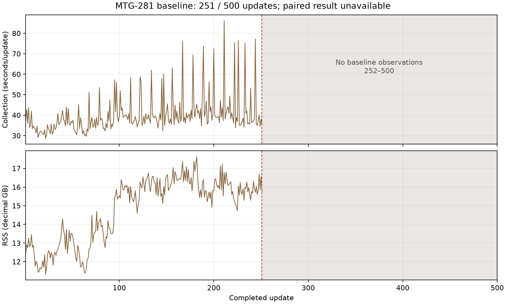

2026-11-12 UTC. The earlier pre-execution QA pass (commit 44bf3640e) covered CLI mistake handling,
live blockwise capture and the TLS cause of provider read failures. Since then the baseline ran, stalled at 251/500,
the comparison reader's receipt bindings were corrected and the Task closed inconclusive. This pass followed
experiments/self-play-collection-273.md as a first-time reader: a git ls-files -co --exclude-standard
copy in /tmp/qa281b without experiments/data/, an empty MANABOT_DATA_CACHE, and the guide's
commands verbatim. Nothing was rented; no game or training ran.
| Scenario | What I did | What I saw |
|---|---|---|
| Fresh environment | uv sync --locked --no-install-project --extra artifacts --extra reports --extra dev | 45 s, clean. |
| Fetch all evidence, cold cache | manabot.data fetch experiments/data/collection-growth-281 under doppler run --project manabot --config prd | 46 files, 72.8 MB, 15 s, digests verified. Includes all of execution-20261112/ and prepared/. |
| Reproduce historical figures | report_collection_growth.py --data … --out .runs/collection-growth/report | Exit 0; summary.json, phases.png, growth.png byte-identical to the published copies. |
| Try the paired reader on the real baseline alone | copied before.json + before-training.json into a new data dir; ran the documented paired command | error: .runs/pc lacks after.json, after-training.json, exit 2, nothing written. Matches the report's statement that the frozen command cannot run without genuine after inputs. |
| Check the report's identity-validation claim | called the maintained reader's _validate_arm on the published baseline capture/receipt and the prepared before job | ['before: incomplete scientific target or metric capture'], last update 251 — identical to execution.json's baseline_identity_validation. No identity mismatch. |
| Reader erratum binding | sha256 of the maintained reader, the published execution copy and the frozen prepared copy | Maintained = execution copy = e9adf766… (erratum's corrected digest); prepared copy = db645bfc… (erratum's original). Frozen bytes untouched. |
| Look at the partial figure | opened before-partial.png (embedded in the report) | Legible: collection spikes and RSS rise to ~17.6 GB through 251, missing 252–500 shaded and labelled. Peak agrees with the report's 17.62 GB. |
| Follow the report's links | every relative link and in-page anchor in the report; README's #data and guide anchors | All resolve. |
| Find the follow-up | read the closing paragraph, then lf task status MTG-305 | Gap, fixed: the report said "a follow-up Task" without naming it; a reader had to search. Now names MTG-305 (exists, unstarted, experiments Wave). |
| Focused tests | comparison report, growth capture, preparation, experiment-data-untracked | 26 passed. |

experiments/self-play-collection-273.md: the closing paragraph names follow-up Task MTG-305.No script, published byte or frozen preparation changed.
Works now: cold fetch of all 46 published files, byte-identical historical report reproduction, the documented paired command's refusal without after inputs, and the report's baseline identity-validation and erratum claims, which re-derive exactly.
Not reached: a real paired verdict. The Task closed inconclusive with no repaired arm, so the paired reader's verdict path is exercised only by its synthetic tests. That is MTG-305's work.
Still wrong, worst first:
_validate_arm); the CLI has no single-arm mode. That is acceptable for a closed Task. A single-arm mode would be a design change, so I did not add one.manabot.data fetch without credentials prints a traceback rather than a one-line error (pre-existing).